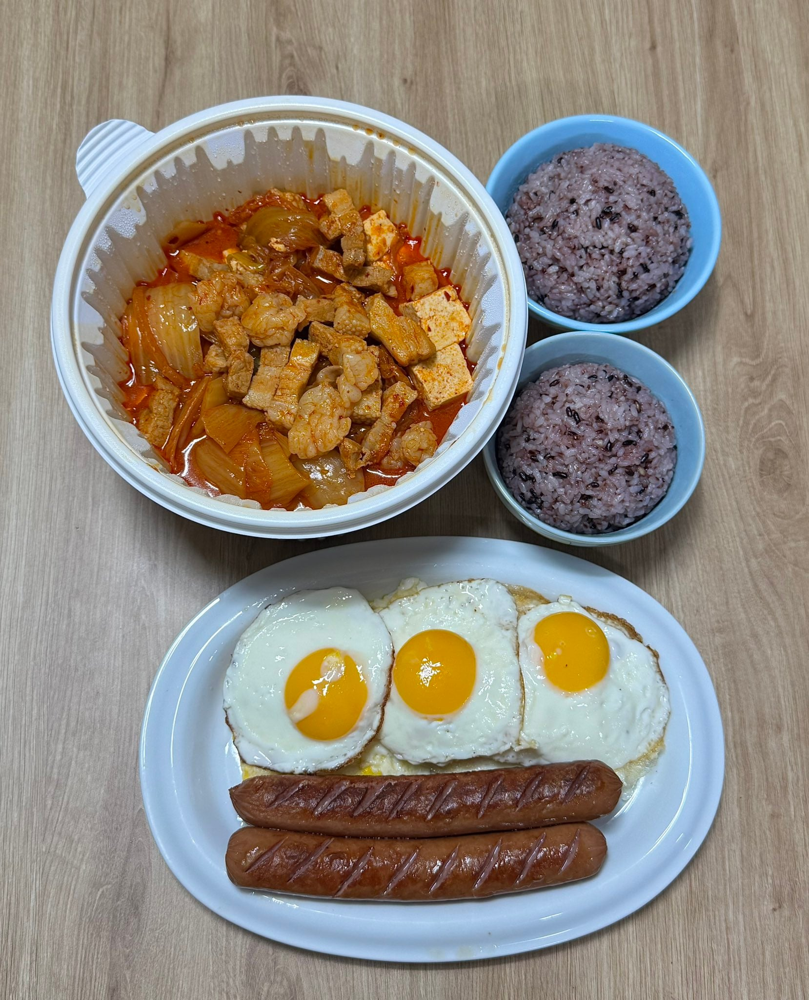

김치찌개

새벽에 몰래 건져먹던 김치찌개 고기
자취 이후론 그런 마피아게임 할 수가 없더라
김치찌개엔 목살이 최고였어 다들 뭐 넣는진 모르겟지만
국물에 기름뜨는거 싫어서 항정살 넣음
항정살이 ㄹㅇ 기름개많지아늠?? 근데 항정살넣으면 맛은엤겠당 ㄷㄷ
항정살도 기름 많은 부위인데
땡이임? 저걸 다 먹는다고
혼자 계란후라이를 몇개를 먹는겨
3~4인분인데
밥이 두공기면 2인분이다
혼자먹으면 1인분임
김치는 식감이 남아있으면 안되고 흐물흐물할 때 까지 푸욱 쪄야 제맛
소세지말고 스팸으로
김치찜
뚝배기에가온나
돼지쉨
킹갓찌개는 인정이지 ㅇㅇ
밥 예쁘게 잘 담았다
부대찌개나 된찌로 바꿔다오...
김 내놔
3인분이네
저 근본조합도 난 저런 일회용용기만보면 존나더러운곳에서 배달왔을거생각하면 못먹겠음
밥을 저렇게 동그랗게 해놓으면 맛이 안사는데
밥 두그릇을 어케먹냐 배불렁~
스팸 어딨냐고 독일에서 왔냐
하 ㅈㄴ맛닜겠다
포장용기가 진짜 개빡치네
일단 두그릇 퍼놓고 시작하니까 팍 식네
다 식는다고!!!
부자냐?
돼지녀석
소시지말고 스팸놨으면 ㅇㅈ인데
김 왜없냐?
저 플라스틱용기가 식욕을 떨어트림
저기 계란후라이만 줘도 쌉가능.